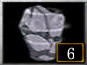
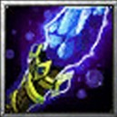
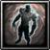
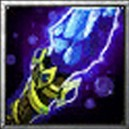
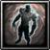
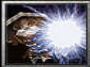

Гайд на героя Доты 1 - Kaolin(Earth Spirit)

Содержание Гайда:
1. История Героя
2. Характеристика Героя
3. Плюсы и Минусы Героя
4. Описание способностей
5. Скилл билд
6. Итем билд
7. Тактика по игре
8. Контр пики и созники героя
История Героя
Когда угроза Scourge нависла над жителями вершин Crag Lands, их просьбы о помощи остались безответными. Сильные взбирались все выше в горы в поисках убежища, оставляя слишком старых и молодых на произвол судьбы. Когда силы зла настигли беспомощных людей, их невинная кровь окропила скалы. Видя это, сердце гор сжалось и исторгло своего защитника, чтобы дать бой несметным ордам. Отколовшись от утеса, в наш мир пришел Каолин. Обладая силой гор, он подчинил своей жестокой воле метал и камень.
Способности Героя

Stone
 Добовляет дополнительную способность: 
Stone
Remnant
Клавиша: E
Призывает каменную глыбу на поле боя. Максимум камней: 6. Время жизни одного камня: 120 сек. Камни восстанавливаются раз в 25 секунд.
 Добовляет дополнительную способность: 
Enchant
Remnant
Клавиша: X
Earth Spirit на время заколдовывает героя, делая из него каменную копию. Через 3 секунды копия раскалывается, выпуская героя и нанося урон противникам поблизости.

Boulder
Smash
Клавиша: D
Earth Spirit бьет по врагу или союзнику, и отталкивает его в ту сторону, в которую смотрит. Если целью заклинания является область, герой ударит ближайший созданный камень в радиусе 200. Цель заклинания наносит урон всем юнитам, по которым попадает. Если целью заклинания является каменная копия, то получившие урон юниты будут также оглушены, а дистанция полета значительно возрастет.

Rolling
Boulder
Клавиша: F
Герой сворачивается в валун, который после задержки в 0,6 сек. катится в выбранном направлении, нанося урон врагам. Он остановится, если попадёт во вражеского героя или будет оглушён. Валун станет сильнее, если попадёт на каменную копию: он покатится быстрее и дальше, а скорость передвижения врагов, в которых он попал, будет замедлена.

Geomagnetic
Grip
Клавиша: R
Earth Spirit притягивает союзного юнита или каменную копию к себе. Враги, в которых попадет цель заклинания, будут обезмолвлены, а также получат урон, если цель — каменная копия

Magnetize
Magnetize
Клавиша: Т
Намагничивает существ в небольшой области вокруг себя, из-за чего они нескольк о секунд получают периодический урон. Если намагниченный герой приблизится к каменной копии, она выпустит мощный разряд, применяя эту способность на всех врагов вокруг и запуская её заново, и уничтожится спустя несколько секунд. Это может повторяться по нескольку раз. Если вражеский герой замедлен или обезмолвлен способностями Rolling Boulder или Geomagnetic Grip, то эффект передастся остальным намагниченным героям.